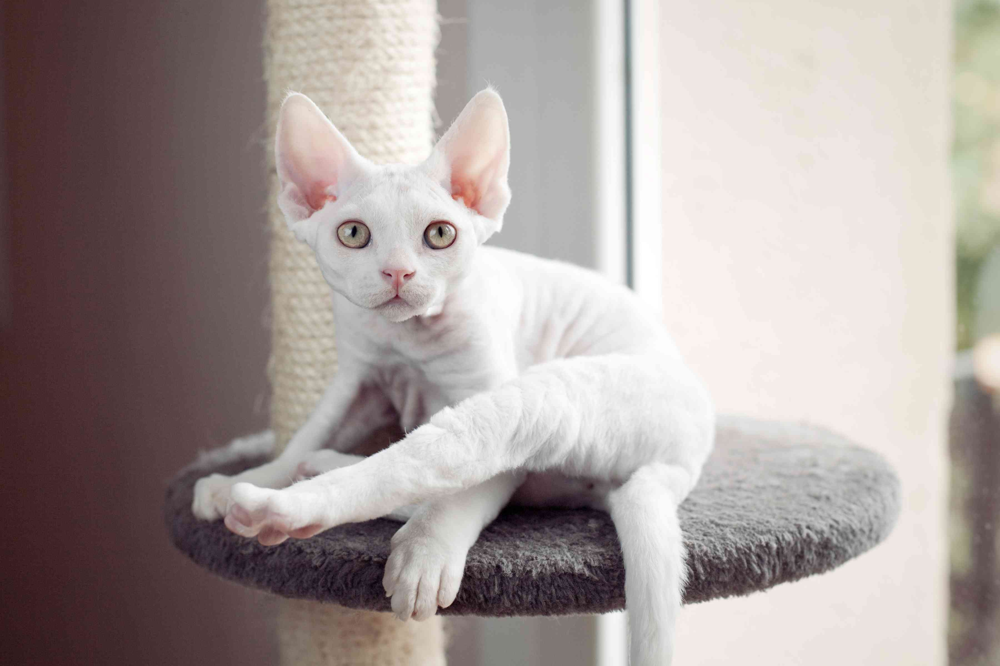

The Devon Rex is a relatively newer breed of cats, discovered by accident in the region of Devonshire, England, in 1960 and has been called many things:a pixie cat, an alien cat, a cat that looks like an elf-or a bat.
it is also known to behave more like a dog than like a cat.
